| Nombre | Posición | Edad | Bibliografía | Portada |
|---|---|---|---|---|
| Cristiano Ronaldo | Delantero | 40 |
Cristiano Ronaldo, nacido en 1985, es el máximo referente histórico del fútbol portugués. Actualmente juega en el Al Nassr de Arabia Saudita y sigue siendo una figura clave de Portugal. |
 |
| João Félix | Delantero / mediapunta | 25 |
João Félix, nacido en 1999, es un jugador creativo y técnico. Actualmente juega en el FC Barcelona, buscando consolidarse como referente ofensivo. |
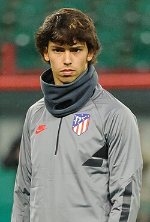 |
| Vitinha | Mediocampista | 25 |
Vitinha, nacido en 2000, es un centrocampista talentoso con gran visión de juego. Juega en el Paris Saint-Germain y es una pieza clave del medio campo luso. |
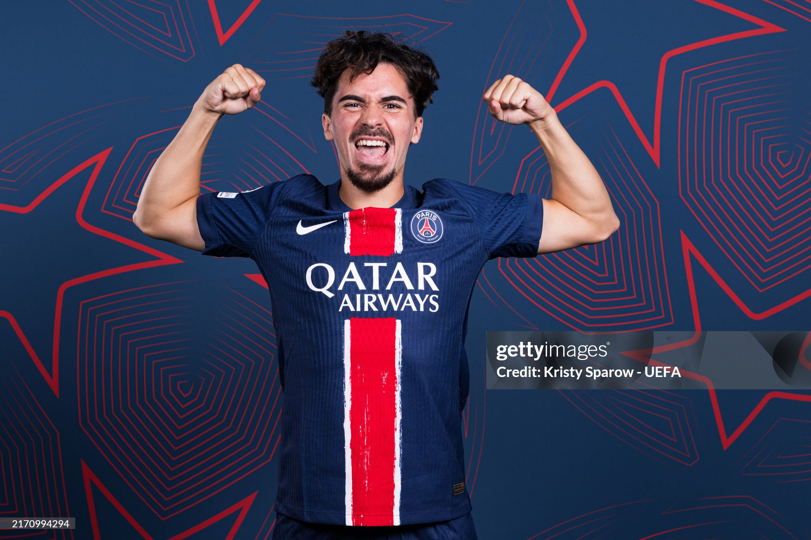 |
| Nuno Mendes | Lateral izquierdo | 23 |
Nuno Mendes, nacido en 2002, es un lateral veloz y ofensivo. Se desempeña en el Paris Saint-Germain como uno de los mejores jóvenes en su puesto. |
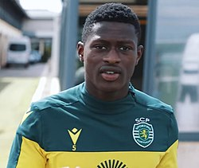 |
| Bernardo Silva | Mediocampista ofensivo | 31 |
Bernardo Silva, nacido en 1994, es un mediocampista de gran técnica y movilidad. Actualmente juega en el Manchester City, donde ha ganado múltiples títulos. |
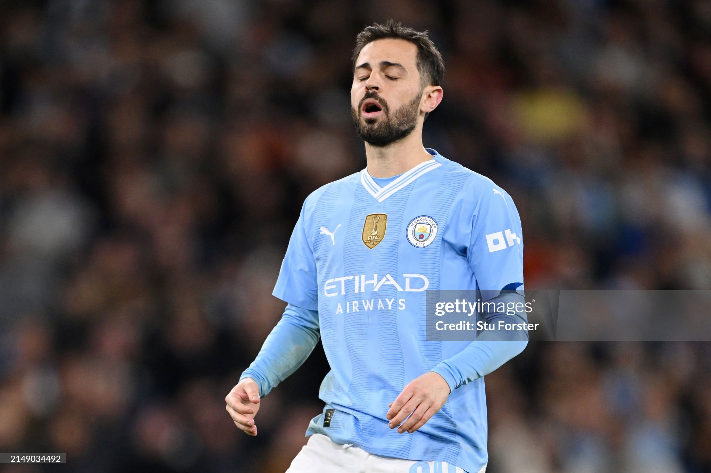 |
| João Cancelo | Lateral derecho | 31 |
João Cancelo, nacido en 1994, es un lateral ofensivo y polivalente. Juega en el FC Barcelona y es considerado uno de los mejores laterales de Europa. |
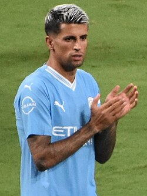 |
| Diogo Costa | Portero | 26 |
Diogo Costa, nacido en 1999, es el portero titular de la selección portuguesa. Juega en el FC Porto y destaca por sus reflejos y seguridad bajo los tres palos. |
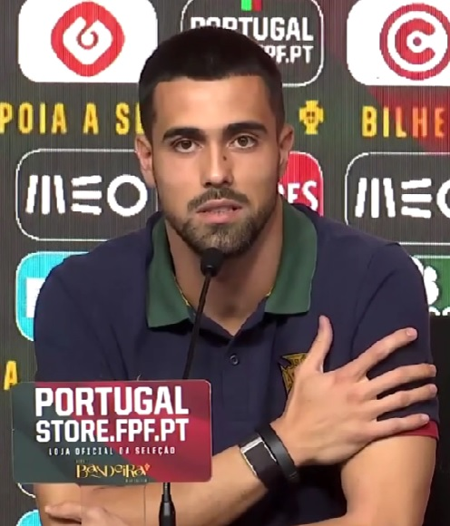 |
| Diogo Dalot | Lateral derecho | 26 |
Diogo Dalot, nacido en 1999, es un lateral de gran proyección ofensiva. Actualmente juega en el Manchester United, donde se ha consolidado como titular. |
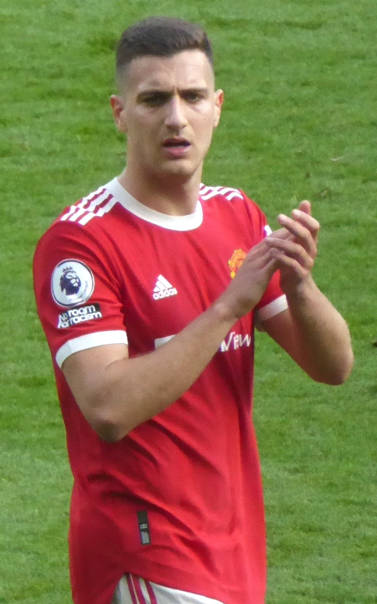 |
| Rúben Dias | Defensa central | 28 |
Rúben Dias, nacido en 1997, es uno de los mejores defensores centrales del mundo. Juega en el Manchester City y ha sido líder en la zaga defensiva del club y selección. |
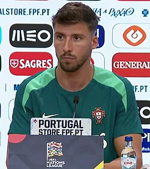 |
| Rafael Leão | Extremo izquierdo | 26 |
Rafael Leão, nacido en 1999, es un extremo veloz y desequilibrante. Juega en el AC Milan, donde es considerado una de sus máximas figuras. |
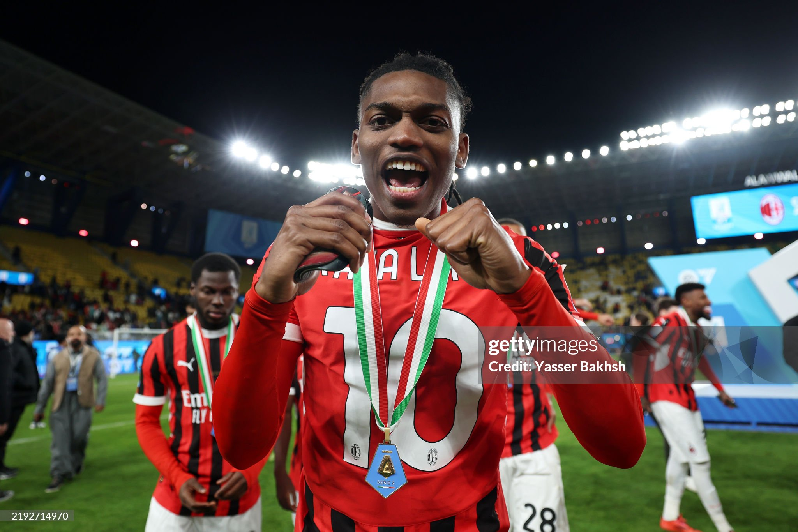 |
| Rúben Neves | Mediocampista defensivo | 28 |
Rúben Neves, nacido en 1997, es un mediocampista con gran visión de juego y liderazgo. Actualmente juega en el Al Hilal de Arabia Saudita. |
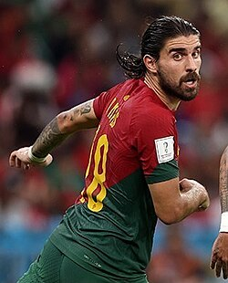 |
| Bruno Fernandes | Mediocampista ofensivo | 31 |
Bruno Fernandes, nacido en 1994, es un mediocampista creativo y capitán del Manchester United. Es pieza clave en la selección portuguesa por su visión y goles desde segunda línea. |
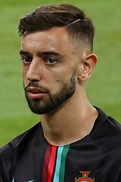 |